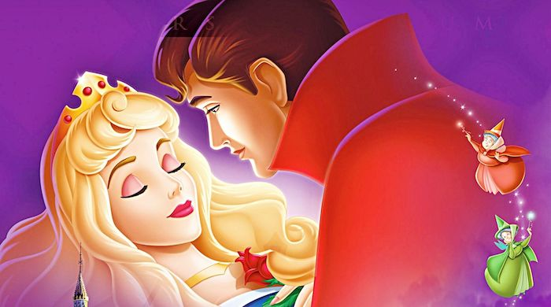

Sleeping Beauty

After being snubbed by the royal family, a malevolent fairy places a curse on a princess which only a prince can break, along with the help of three good fairies.
Storyline
After the beautiful Princess Aurora is born into royalty, everyone gathers to celebrate. Everything is perfectly fine until an unwanted guest appears, the evil fairy Maleficent. Maleficent curses the young princess and announces that she will die by pricking her finger on the spindle of a spinning wheel before sunset on her 16th birthday. Fortunately, one of the good fairies, Merryweather, changes the spell so Aurora will fall into a deep sleep instead, and the only way to wake her from her sleep is true love's kiss. Finally the day comes.Details
Duration: 1h 15minRelease Date: December 25, 1959 (United States)
Genre: Animation · Family · Fantasy
Directors: Clyde Geronimi · Eric Larson · Les Clark
Starring: Mary Costa · Bill Shirley · Eleanor Audley · Verna Felton · Barbara Luddy · Barbara Jo Allen